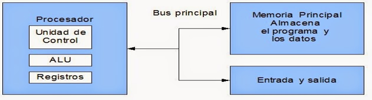
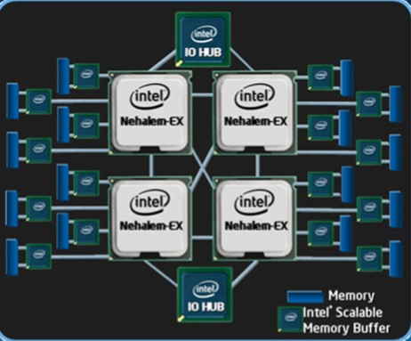
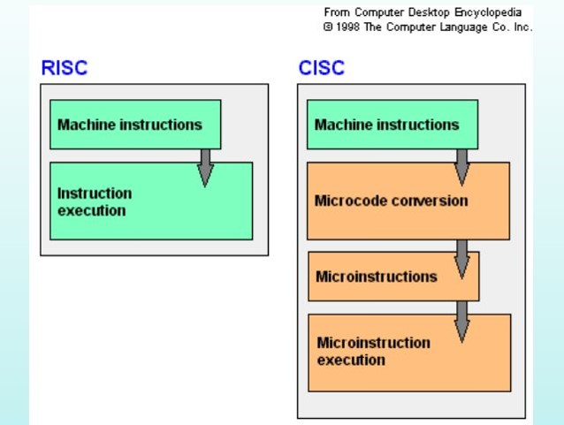

|
|---|
MODELOS DE ARQUITECTURAS
|
Los modelos se basan en tres componentes principales los cuales son: Unidad central de procesamiento (CPU), Memoria, Entrada/Salida (E/S). |
|---|
1.1.1 CLÁSICAS
| Estas arquitecturas se desarrollaron en las primeras computadoras electromecánicas y de tubos de vacío. Existen dos arquitecturas clave: Von Neumann y Harvard. |
|---|


1.1.2 SEGMENTADAS
| Estas arquitecturas dividen el proceso de ejecución en etapas, lo que permite realizar múltiples operaciones simultáneamente, base del procesamiento en pipeline. |
|---|

1.1.3 DE MULTIPROCESAMIENTO
| Implican el uso de múltiples procesadores trabajando en paralelo para aumentar la capacidad de procesamiento. |
|---|

1.2 ANALISIS DE LOS COMPONENTES
1.2.1 ARQUITECTURAS
| CISC utiliza un conjunto amplio de instrucciones complejas, mientras que RISC emplea instrucciones simples y uniformes. |
|---|
